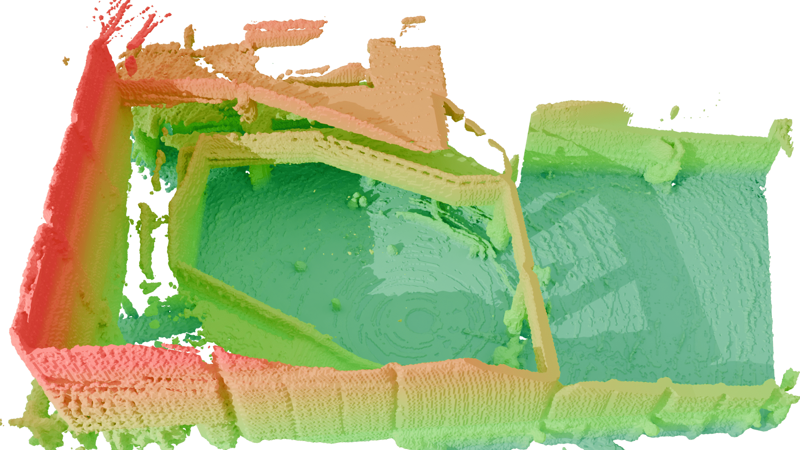
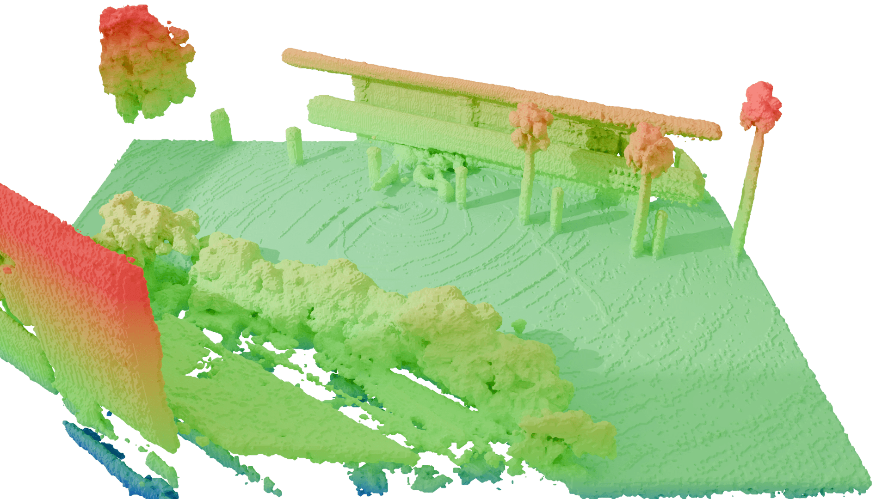
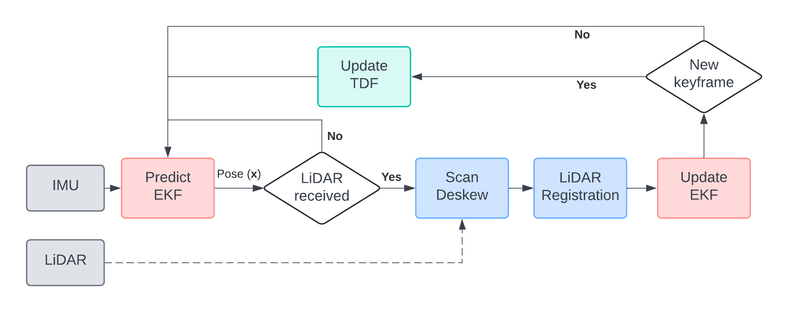
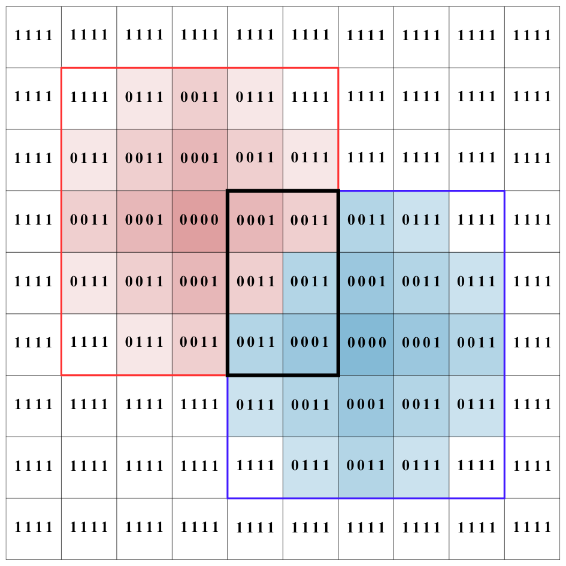

This paper presents a new approach for 6DoF Direct LiDAR-Inertial Odometry (D-LIO) based on the simultaneous mapping of L1 truncated distance fields on CPU.
This continuous representation enables working with raw 3D LiDAR data online, avoiding the need of LiDAR feature selection and tracking, simplifying the odometry pipeline and easily generalizing to many scenarios.
D-LIO has been accepted to IEEE Robotics and Automation Letters (RA-L)!
Overview
The method is based on the proposed Fast Truncated Distance Field (Fast-TDF) as a convenient tool to represent the environment.
This representation enables solving the LiDAR point-cloud registration as a nonlinear optimization process, simultaneously producing an accurate TDF map of the environment,
and updating such map at constant time independently of its size.
The approach is benchmarked against other state-of-the-art odometry approaches, demonstrating the same or better level of accuracy.


Method
The D-LIO algorithm incrementally estimates the system pose using an Extended Kalman Filter (EKF).
It integrates inertial measurements for pose prediction and uses point cloud-to-map registration for pose updates.
The environment is mapped based on the Truncated Distance Field (TDF).
This alignment is used to constrain the EKF's pose and velocity.
Whenever the estimated pose variation exceeds a threshold, the TDF map is updated by incorporating new information.

Fast-TDF
The core of D-LIO is the Fast Truncated Distance Field (Fast-TDF). This method represents the environment as a 3D grid, but instead of just storing "occupied" or "free", it efficiently encodes the L1 distance to the nearest obstacle.
To achieve constant-time map updates, it uses a pre-calculated binary kernel. The distance in this kernel is represented as a bit-set mask, where each set bit accounts for the distance.
This encoding has a key advantage: the shortest distance from multiple overlapping kernels can be found with a single, highly efficient bitwise-AND operation. This avoids complex comparisons and makes the process parallelizable on the CPU.
Binary Mask (4-bit)
L1 Distance
0000
0 (Center)
0001
1
0011
2
0111
3
1111
4 (Max / Truncation)
Table 1: Correspondence between bit-set masks and L1 distance.

Figure 1: The final distance map (center) is computed by applying the bitwise-AND operation to overlapping kernels (top/bottom).
Results
We benchmarked D-LIO on three challenging public datasets: VIRAL, Newer College, and VBR. These tests evaluate performance in diverse scenarios, including aerial (UAV) and ground platforms, against several state-of-the-art (SOTA) methods.
Trajectory Accuracy (ATE)
The Absolute Translation Error (ATE) [m] was measured on the VIRAL and Newer College datasets. As shown in the table, D-LIO achieves consistently high accuracy, ranking first or second in most sequences. It remains highly competitive even when compared to methods that utilize back-end optimization (like LIO-SAM or PIN-SLAM), which D-LIO does not.
Sequence
D-LIO
A-LOAM
M-LOAM
KISS-ICP
FAST-LIO2
LIO-SAM
PIN-SLAM
eee01
0.074
0.212
0.249
2.383
0.166
0.075
-
eee02
0.073
0.199
0.168
1.586
0.100
0.069
2.056
eee03
0.121
0.148
0.233
1.055
0.142
0.101
0.615
nya01
0.080
0.077
0.123
0.359
0.127
0.076
0.086
nya02
0.104
0.091
0.191
-
0.151
0.070
0.092
nya03
0.065
0.108
0.226
1.389
0.130
0.137
0.455
sbs01
0.085
0.103
0.173
1.353
0.130
0.089
0.205
sbs02
0.067
0.091
0.147
1.435
0.144
0.083
0.528
sbs03
0.098
0.367
0.153
1.037
0.126
0.140
0.708
q-easy
0.093
0.085
0.141
0.100
0.100
0.074
0.090
Table 2: ATE (m) on VIRAL and Newer College. Best (bold) and second-best (underline) odometry methods.
Scalability on Large Datasets
To evaluate performance in large-scale environments, we used the VBR dataset, featuring long trajectories (up to 2.5 km) in complex indoor/outdoor settings. D-LIO demonstrates robust scalability, maintaining low ATE (m) and Relative Pose Error (RPE) (%).
Sequence
D-LIO
KISS-ICP
PIN-SLAM
diag
0.560(0.72%)
1.397 (1.79%)
0.362(0.47%)
pincio
7.390 (3.45%)
0.784(0.49%)
0.647(0.45%)
Table 3: ATE (m) and RPE (%) on the VBR dataset.
Mapping Quality
We also evaluated the 3D reconstruction quality on the Newer College (Quad-Easy) sequence using standard metrics: Accuracy, Completeness, Chamfer-L1 (C-L1), and F-Score. D-LIO produces highly competitive maps, achieving the best completeness and ranking second for C-L1 and F-Score among all tested odometry-driven methods.
Method
Pose
Acc. (cm)
Comp. (cm)
C-L1 (cm)
F-Score (%)
VDB-Fusion
KissICP
14.03
25.46
19.75
69.50
SHINE
KissICP
14.87
20.02
17.45
68.85
NKSR
KissICP
15.67
36.87
26.67
58.57
PUMA
Odometry
15.30
71.91
43.60
57.27
SLAMesh
Odometry
19.21
48.83
34.02
45.24
NeRF-LOAM
Odometry
12.89
22.21
17.55
74.37
S²KAN-SLAM
Odometry
13.32
18.80
16.06
72.03
ImMesh
Odometry
15.05
19.80
17.42
66.87
PIN-SLAM
Odometry
11.55
15.25
13.40
82.08
KN-LIO
Odometry
8.18
11.65
9.92
91.01
D-LIO
Odometry
12.14
10.63
11.39
83.83
Table 4: Mapping metrics on Newer College. Best (bold) and second-best (underline) scores.
Runtime Analysis
The system's performance was analyzed on an Intel Core i7-13700H CPU without GPU acceleration. The map update step is the most computationally expensive, as its time strongly depends on point cloud density. However, optimization runs at the sensor rate (10 Hz) while updates are triggered less frequently, balancing the load.
Dataset
Points (avg.)
Total (s)
Optimize (s)
Update (s)
eee
~20k
0.048 ± 0.055
0.046 ± 0.013
0.155 ± 0.009
nya
~20k
0.049 ± 0.034
0.042 ± 0.014
0.146 ± 0.016
sbs
~20k
0.051 ± 0.048
0.044 ± 0.016
0.142 ± 0.034
q-easy
~100k
0.479 ± 0.196
0.442 ± 0.158
0.470 ± 0.095
diag
~190k
0.603 ± 0.240
0.565 ± 0.194
0.315 ± 0.085
pincio
~140k
0.576 ± 0.256
0.505 ± 0.182
0.563 ± 0.146
Table 5: Runtime analysis (mean ± std. dev) with no downsampling.
Project Video
Qualitative results, 3D reconstructions, and estimated trajectories from the datasets.
Citation
If you use D-LIO, please cite:
BibTeX
@misc{cotoelena2025dlio6dofdirectlidarinertial,
title={D-LIO: 6DoF Direct LiDAR-Inertial Odometry based on Simultaneous Truncated Distance Field Mapping},
author={Lucia Coto-Elena and J. E. Maese and L. Merino and F. Caballero},
year={2025},
eprint={2505.16726},
archivePrefix={arXiv},
primaryClass={cs.RO},
url={https://arxiv.org/abs/2505.16726},
}
Acknowledgments
This work is partially supported by the grants INSERTION (PID2021- 127648OB-C31) and NORDIC (TED2021-132476B-I00), both funded by the “Agencia Estatal de Investigación – Ministerio de Ciencia, Innovación y Universidades” and the “European Union NextGenerationEU/PRTR.